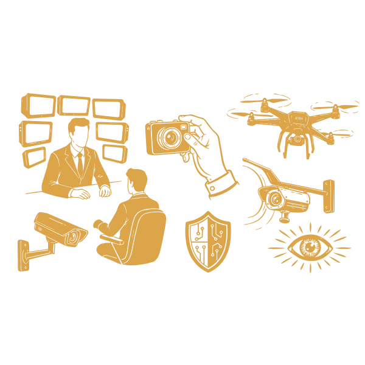
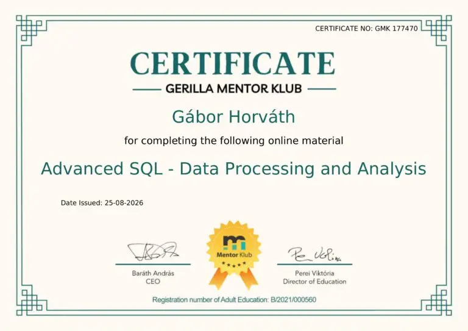
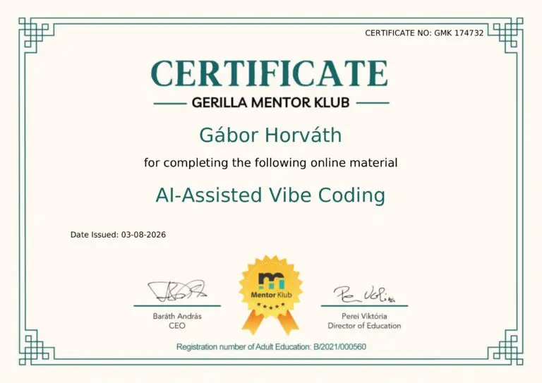
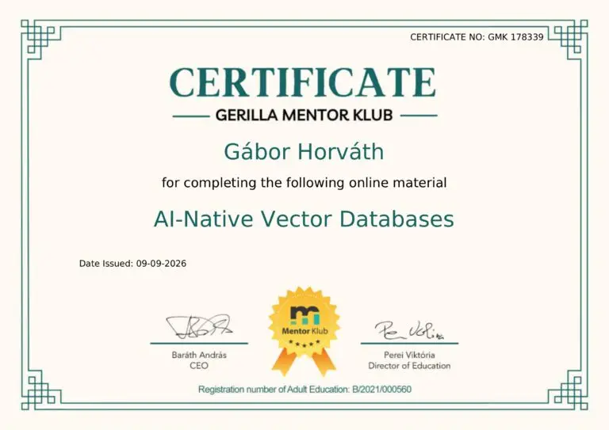

Gábor vagyok, biztonságtechnikai mérnök, Budapesten élek.

Videómegfigyelés (CCTV) · Beléptető rendszerek · Behatolásjelzés · Biztonsági IT-hálózatok
Rendőrhatósági tervező-szerelői igazolvány 2008 óta · Mérnök informatikus diploma · Angol B2 (állami nyelvvizsga)
Rólam
Több mint húszéves hazai és nemzetközi tapasztalattal rendelkező, budapesti biztonságtechnikai mérnök vagyok. Szakmai fókuszomban az integrált biztonsági rendszerek állnak: a videómegfigyelés (CCTV), a beléptető- és a behatolásjelző rendszerek, valamint az ezeket kiszolgáló biztonsági IT-hálózatok. Munkámat a pragmatikus megoldásokra való törekvés, az egyértelmű kommunikáció és a szakadatlan fejlődés határozza meg. Különösen élénken foglalkoztat a generatív AI és az adatelemzés innovatív alkalmazása a gyakorlatban. Amikor épp nem a hivatásomnak élek, a családomnak, az utazás szenvedélyének és a természetjárásnak szentelem az időmet.
Úgy tartják, egy kép felér ezer szóval. Ha szeretnél egy kis bepillantást nyerni az életembe, örömmel mutatok néhány fotót és mást – nincs más dolgod, mint a lenti gombra kattintani.
Tanúsítványok

Lelkes tagja vagyok a Gerilla Mentor Klub-nak, ahol rendszeresen részt veszek különböző tréningeken. Itt most csak néhányat mutatok be, amit mostanában szereztem meg.

Advanced SQL

AI-Assisted Vibe Coding
Excel VBA
AI Security in Practice

AI-Native Vector Databases
Azure OpenAI and ChatGPT
Írásaim
Jegyzetek a munkámból – amit tanulok, és ahogy a biztonságtechnikában alkalmazom.
-
A kiber- és fizikai biztonság összefonódása: amikor az IT-szemlélet a peremhálózaton landol
Az idei GSX tanulsága: a kiber- és fizikai védelem összeért. Miért kell a beléptető terminált is informatikai végpontként védeni, és mit jelent ez a Zero Trust szemléletben.
📖 Elolvasom -
A felvétel útja a kamerától a tárgyalóteremig – négy pont, ahol elveszhet a bizalom
Egy felhős kamerarendszer, amely a szerződés ellenére megosztotta az adatait, és az aláírt videó szabványa: a felvétel útjának négy pontja, ahol elveszhet a bizalom.
📖 Elolvasom -
A kamera is számítógép – csak éppen egy oszlop tetején
Egy hálózatról átvehető rögzítő és egy oszlopról leszerelt kamera: két szeptemberi eset arról, miért kell az IP-kamerát számítógépként védeni.
📖 Elolvasom -
Amit a generatív AI-ról tanultam – és amit a munkámban kezdek vele
Biztonságtechnikai mérnökként az elmúlt időszakban sokat tanultam a generatív AI működéséről. Leírom, mit értettem meg belőle, és hol gyorsítja valóban a munkámat.
📖 Elolvasom


Küldj üzenetet - szívesen válaszolok bármilyen kérdésre
Ha kérdésed merült fel az oldallal kapcsolatban, vagy csak szívesen megismernél jobban, vedd fel velem a kapcsolatot, küldj egy e-mailt és amint tudok, válaszolok.
📧 Kapcsolatfelvétel